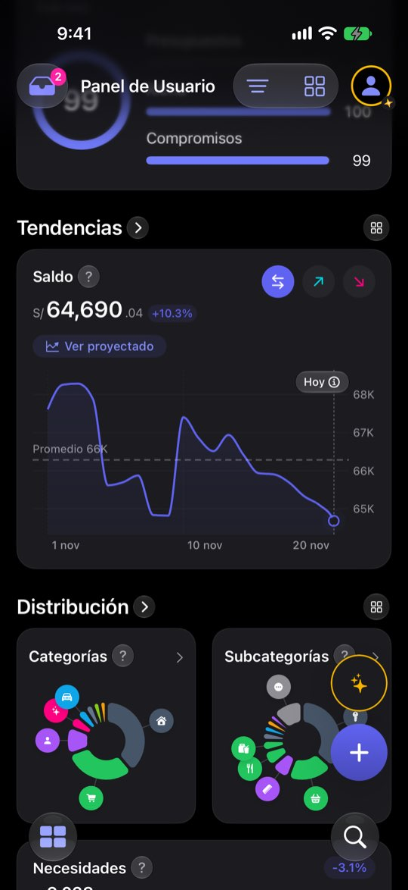
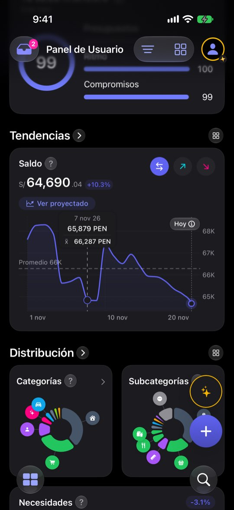
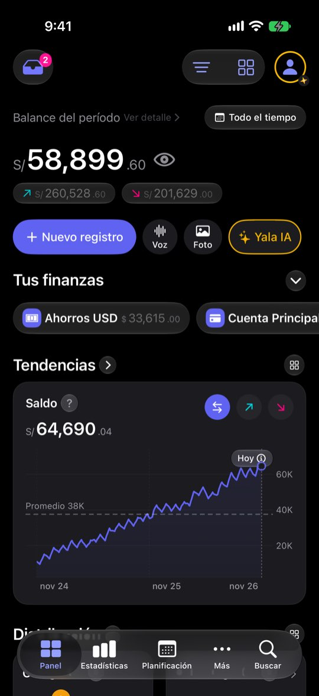

La gráfica de saldo exagera y no dice contra qué compara
ficha con el reloj del simulador en el 20 de noviembre de 2026: cuatro cuentas (Ahorros USD $33,615 · Cuenta Principal S/ −53,738.91 · Efectivo S/ 380 · Tarjeta de crédito S/ 1,284.30 por pagar), balance de noviembre S/ 6,882.40 (entró S/ 12,910.40, salió S/ 6,028), saldo total S/ 64,690.04 y una nota de salud de 99. El saldo negativo de la Cuenta Principal sale de cómo la semilla reparte dos años de gastos; aquí sirve para ver qué hace el Panel con una cuenta en rojo. Ninguna cifra es de una persona real.Lo que se ve hoy
- Observado Capturas 02, 05 y 14
- Observado Código: la ventana pinta el código ISO (TrendChartView.swift:279)
- Hipótesis La forma exagerada asusta más que el dato; el «+10.3 %» sin referencia se descarta como ruido



Alternativas
Todas con el mismo caso. Las cifras salen de las capturas salvo donde la maqueta dice «ilustrativo».
Etiquetas que se leen
El chip dice «vs 20 oct», la ventana usa S/ y «Promedio», y el eje de períodos largos pone el año.
A favor
- Solo textos y formato
- Arregla tres confusiones a la vez
En contra
- No cambia la sensación de caída
Inicio y fin a la vista
Debajo de la gráfica, el valor del primer día, el de hoy y la diferencia en %.
A favor
- La persona lee el tamaño real del cambio sin interpretar el eje
- Funciona con montos ocultos (solo el %)
En contra
- Una línea más en la tarjeta
- Hay que decidir qué % manda si también está el chip
Eje desde cero
El eje vertical arranca en 0.
A favor
- Imposible exagerar
En contra
- Con saldos grandes la línea queda plana y no se ve nada
- Con saldo negativo no hay cero natural
Escala mínima
El eje nunca abarca menos de un margen fijo alrededor del promedio (el 8 % del ejemplo es ilustrativo).
A favor
- Equilibrio entre detalle y honestidad
En contra
- Un número mágico que hay que calibrar con datos reales
Lado a lado
| A | B | C | D | |
|---|---|---|---|---|
| Dice contra qué compara | Sí | Sí | No | No |
| Corrige la exageración | No | En parte | Sí | Sí |
| Mantiene el detalle | Sí | Sí | No | En parte |
Recomendación
A + B. A arregla tres textos que hoy confunden; B da el tamaño real del cambio sin tocar la escala. Si después la caída sigue asustando, D antes que C.
Decide Jürgen
¿Etiquetas (A) y fila de inicio y fin (B)? ¿Se toca la escala (C o D)?
Revisión por vistas 2.3 · Panel · 7-nov-2026. Capturas del simulador (build Debug de origin/2.3, iPhone 17 Pro e iPad Pro 13, iOS 27.2, modo oscuro, datos ficticios). Los siete perfiles son lentes simuladas, no entrevistas.